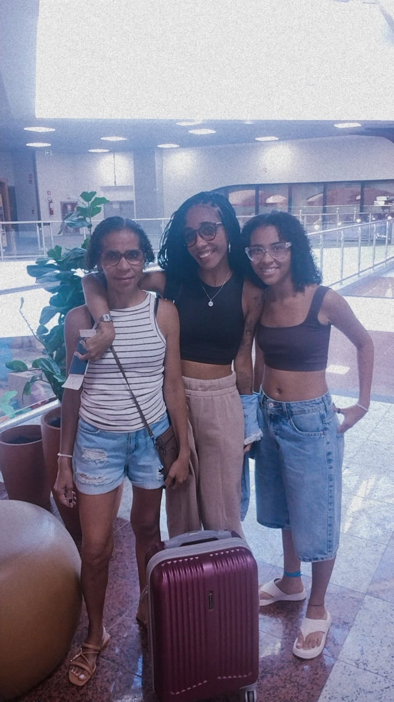
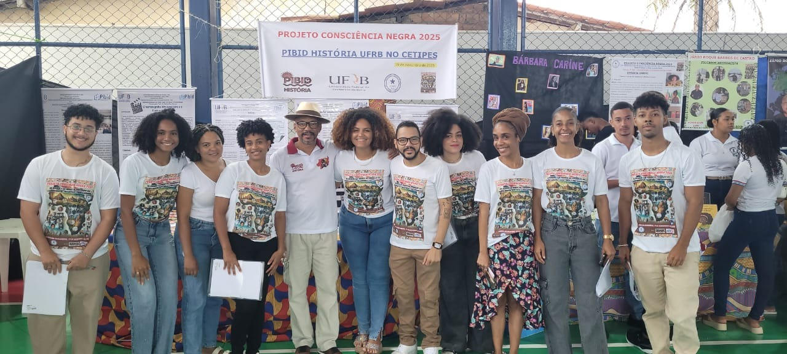
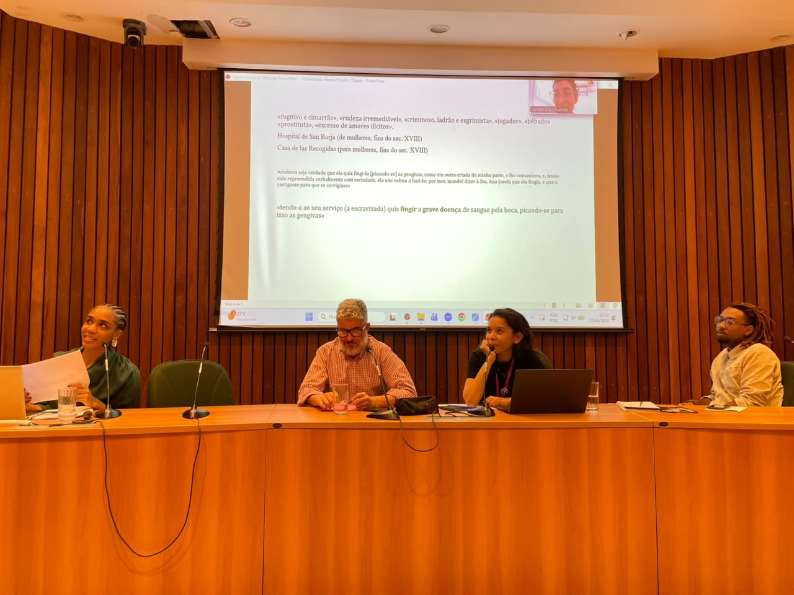
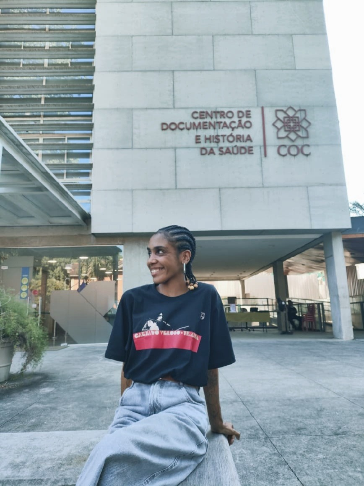

Salvador
Partida para o intercâmbio
No Aeroporto Internacional de Salvador Luís Eduardo Magalhães, Jamile registrou a despedida da mãe e da irmã antes da viagem de intercâmbio, descrita por ela como “um momento de pura emoção”.
Trajetória de egressa
Da graduação em História à pesquisa em História das Ciências e da Saúde.
2021.2–2025.2
No campo específico do formulário, Jamile registrou ingresso em 2021.2 e conclusão em 2025.2. Em seu depoimento, ela explica que ingressou em 2021.1 e que, em razão da pandemia, as aulas começaram de fato em 2021.2, ainda de forma remota. A página preserva essa distinção tal como foi informada.
Ao longo da graduação, sua narrativa articula iniciação científica, PIBID, estágio, movimento estudantil, participação em eventos acadêmicos e a consolidação de um interesse de pesquisa sobre escravidão, saúde e doenças.
Memórias do curso



Essa foto representa muito mais do que um simples registro. Ela carrega toda a minha trajetória durante a graduação e tudo o que vivi na UFRB. Se não fosse pela universidade pública, pela oportunidade de ingressar, pelo meu esforço na UFRB e por todas as portas que ela abriu para mim, talvez eu não tivesse conseguido chegar até aqui. Foi por meio dessa trajetória que conquistei uma das experiências mais marcantes da minha vida: fui aprovada entre as 10 primeiras colocadas, em uma seleção com 50 estudantes de todo o Brasil, para realizar um intercâmbio na República Dominicana. Por isso, essa fotografia tem um peso imenso para mim. Ela representa conquista, resistência, oportunidade e, sobretudo, a força das políticas públicas na transformação de vidas. Representa tudo aquilo que, muitas vezes, é difícil colocar em palavras, o quanto uma universidade pública pode mudar o destino de uma pessoa.Quando olho para essa foto, não vejo apenas uma imagem. Vejo a menina que entrou na universidade cheia de sonhos, os desafios que enfrentei, tudo o que aprendi, as oportunidades que conquistei e a mulher que me tornei ao longo desse caminho. Essa foto é, para mim, a materialização de um sonho e a prova de que políticas públicas, quando existem e chegam até as pessoas, podem transformar histórias para sempre. Concluir minha gradução com chave de ouro, foi uma aprovação ímpar....
Depoimento
Meu nome é Jamile Santana Fernandes. Eu ingressei na UFRB em 2021.1, no curso de Licenciatura em História, e concluir o curso em 2025.2. Por conta da pandemia, as aulas começaram de fato apenas em 2021.2, ainda de forma remota. Foi somente em 2022.1 que eu saí de Salvador, minha cidade, e me mudei para Cachoeira. E foi aí que, para mim, começou de verdade a minha jornada na universidade.
Quando eu cheguei a Cachoeira, eu não imaginava o quanto essa experiência iria transformar a minha vida, não só academicamente, mas também como pessoa e como profissional.
Em 2022.2, tive a oportunidade de fazer meu primeiro PIBIC, com o professor Paulo de Jesus. Foi nesse momento que comecei a perceber uma paixão que eu nem sabia que tinha: a pesquisa. A partir dali, comecei a olhar para a História de uma maneira diferente e a perceber que existiam muitas perguntas que ainda precisavam ser feitas e muitas histórias que precisavam ser contadas. Foi nessa pesquisa que começaram a surgir alguns questionamentos sobre as pessoas escravizadas que eram traficadas nos navios. Eu comecei a me perguntar sobre a saúde dessas pessoas: como elas chegavam aos portos depois de toda aquela trajetória? Quem cuidava delas? Quais eram as condições de saúde em que chegavam? Como eram tratadas? E esses questionamentos acabaram se tornando muito importantes para a minha trajetória, porque foi dali que nasceu a pesquisa que me acompanhou durante toda a graduação, dentro da História Social, principalmente na relação entre escravidão, saúde e doenças.
Mas a universidade também me ensinou muito através da sala de aula e da experiência de estar na escola. Entre 2022 e 2023, participei do PIBID com o professor Leandro, e foi uma experiência de muito aprendizado para mim. Trabalhamos com a história local do Recôncavo, com as fumajeiras e as fábricas de charutos da região. E uma das coisas que mais me marcou nessa experiência foi perceber como essa história estava tão próxima dos alunos e, ao mesmo tempo, era pouco conhecida por eles. Muitos daqueles estudantes tinham familiares, mulheres, que haviam trabalhado nessas fábricas, mas eles mesmos, muitas vezes, não conheciam essa parte da história de suas próprias famílias. Então, poder levar essa história para a sala de aula e mostrar para os alunos que a História também estava presente nas histórias das suas mães, das suas avós, dos seus familiares e da própria comunidade foi muito especial. Junto com o Alex e a Andressa, que faziam parte do meu núcleo, produzimos um material didático sobre essa temática e tivemos a oportunidade de colocá-lo em prática na escola. Essa experiência me mostrou que ensinar História não é apenas falar sobre acontecimentos distantes ou sobre personagens que aparecem nos livros. É também fazer com que o aluno olhe para o lugar onde vive e perceba que a história da sua família, da sua comunidade e da sua cidade também é História.
Em 2024, fui aprovada no Partiu Estágio e tive a oportunidade de estagiar no Colégio Estadual da Cachoeira. E foi uma experiência extremamente enriquecedora. Foi ali que eu tive ainda mais certeza de uma coisa: eu queria ser professora. Eu queria a docência para a minha vida. A convivência com os alunos, com os professores e com toda a comunidade escolar me fez perceber que esse era realmente o caminho que eu queria seguir. Tive como coordenador o professor Tito, que também me ensinou muito durante esse período, assim como toda a escola. Ao mesmo tempo, a universidade também foi um espaço de participação, de construção coletiva e de luta. Entre 2022 e 2024, fiz parte do Centro Acadêmico de História, como coordenadora de Políticas Sociais Afirmativas para a Diversidade Sexual. Foi mais uma experiência que me ensinou muito sobre organização, responsabilidade, convivência e, principalmente, sobre a importância de ocupar os espaços da universidade e contribuir para que eles sejam cada vez mais diversos e acolhedores.
No final de 2024 e durante 2025, tive a oportunidade de participar novamente do PIBID, dessa vez coordenado pelo professor Juvenal. Meu núcleo foi em Mangabeira, e foi uma experiência incrível. Junto com a professora Diana, pude acompanhar de perto as aulas, os alunos e o cotidiano da escola. Foi muito bom vivenciar novamente esse contato com os estudantes e perceber como cada experiência na escola fortalecia em mim aquela vontade de seguir na docência. Cada vez mais eu tinha certeza de que era isso que eu queria para a minha vida.
Durante a graduação, também tive a oportunidade de participar de vários congressos e eventos acadêmicos, tanto da própria UFRB quanto de outros espaços, como o Reconcitec, COPENE a ANPUH, além de encontros regionais e nacionais. Essas experiências me permitiram conhecer outras pessoas, outras pesquisas e também outras cidades do Brasil que eu nunca imaginei conhecer. E tudo isso foi ampliando muito os meus horizontes. Quando eu entrei na universidade, eu não imaginava que a graduação poderia me proporcionar tantas experiências diferentes.
E foi também graças à UFRB que eu consegui levar a minha pesquisa adiante. Aquela pesquisa que começou lá no PIBIC, com os primeiros questionamentos sobre a saúde das pessoas escravizadas, foi crescendo e ganhando novos caminhos. Foi quando apresentei a minha pesquisa ao professor Walter Fraga, e ele abraçou a minha ideia. Sou muito grata a ele por isso. Ele foi meu orientador e foi uma pessoa extremamente importante na minha trajetória. E eu digo isso não apenas pelo grande pesquisador que ele é, mas principalmente pelo ser humano. Ele foi muito empático, me apoiou bastante e foi quase um pai durante esse processo rsrsrs. Foi incrível ter sido orientada por alguém que, além de ser um grande intelectual, também foi tão humano comigo.
E eu não posso falar da minha trajetória na UFRB sem falar também dos perrengues. Porque a graduação não foi um conto de fadas. Sair de Salvador e ir morar em outra cidade, mesmo não sendo tão distante, significou enfrentar muitas dificuldades. Tive que lidar com questões de moradia, alimentação, dinheiro, saudade de casa e com todos os desafios de tentar continuar estudando mesmo quando as coisas não estavam fáceis.Teve momentos em que foi muito difícil. Mas eu consegui. E, olhando para trás, percebo que cada uma dessas experiências foi construindo a pessoa e a profissional que eu sou hoje. A pesquisa me mostrou o caminho que eu queria seguir academicamente. O PIBID e o estágio me fizeram descobrir a professora que eu queria ser. O movimento estudantil me ensinou sobre participação e coletividade. Os congressos me fizeram conhecer novos lugares, novas pessoas e novas possibilidades.
No final da graduação, também consegui realizar um intercâmbio que me abriu outras portas e me ajudou a chegar a um objetivo que eu tinha há muito tempo, ingressar no tão sonhado mestrado do Programa de Pós-Graduação em História das Ciências e da Saúde. E hoje sigo justamente em uma área que começou a despertar em mim naquele primeiro PIBIC, a História da Saúde, das Doenças, em diálogo com a História Social da Escravidão.
Por isso, quando eu penso na minha trajetória na UFRB, eu não consigo pensar apenas em um curso que eu fiz. Eu penso em uma universidade que me abriu portas, que me permitiu descobrir o que eu queria pesquisar, que me fez ter certeza de que queria ser professora e que me possibilitou chegar a lugares que eu jamais imaginaria quando saí de Salvador para morar em Cachoeira.
Eu entrei na UFRB em 2021.1 sem saber exatamente onde essa trajetória iria me levar. Hoje, olhando para tudo o que vivi, percebo que a universidade não apenas me ajudou a construir uma trajetória acadêmica e profissional. Ela também me ajudou a descobrir quem eu sou e quem eu quero ser.
Então, se eu pudesse resumir esses anos em uma palavra, seria gratidão. Gratidão pelas pessoas que encontrei, pelos professores que acreditaram em mim, pelas oportunidades que tive, pelos alunos que me ensinaram tanto quanto eu tentei ensinar a eles, pelas amizades, pelos momentos bons e até pelos momentos difíceis ( sem romantizar).
Porque tudo isso fez parte da minha caminhada. E se hoje eu estou onde estou, a UFRB tem uma grande parcela de responsabilidade nisso no melhor sentido possível. Foi lá que muitas portas se abriram para mim. Foi lá que eu descobri a pesquisadora e a professora que eu queria ser.
E é por isso que eu guardo essa trajetória com muito carinho e, acima de tudo, com muita gratidão.
Depois da UFRB

No Aeroporto Internacional de Salvador Luís Eduardo Magalhães, Jamile registrou a despedida da mãe e da irmã antes da viagem de intercâmbio, descrita por ela como “um momento de pura emoção”.

Na Casa de Oswaldo Cruz — Fiocruz, Jamile registra sua primeira experiência mediando uma mesa, em atividade vinculada ao Núcleo de Estudos Escravidão, Raça e Saúde.

Atualmente, Jamile cursa o mestrado no Programa de Pós-Graduação em História das Ciências e da Saúde da Casa de Oswaldo Cruz — Fiocruz.